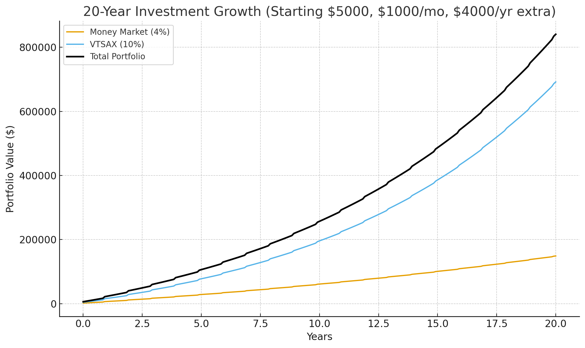

Should I get a high yield saving account?
A high yield checking account is not really that useful. I feel it's mainly a ploy to join the bank.
Getting a brokerage account is much more advantages, a brokerage:
- has a moneymarket funds which is higher yield than bank accounts but can be accessed the same
- has index fund of stocks with much higher return than bank accounts (10%, 7% real)
- has Roth IRA accounts which have tax free investing for tuition, first home and retirement
- has access to bonds and bond funds which may be useful
You'd want the money in your checking account to stay roughly stable while the amount in the brokerage account grows over your life.
Which Brokerage should I use?
Though your mum and I are with Fidelity the best brokerage is Vanguard as they are less likely to trick you into high expense products and they are setup in a way that a lot of their profits go back to the account holders. You can open an account here.
If I open a brokerage account what should I invest in?
I'd say open a brokerage account and move part of your savings over into a money market fund first. Even the safe federal one is returning 4% right now.
For stocks a very common fund is total US stock market fund VTSAX.
Also another option is Roth IRA.
How should I use a Roth IRA?
A Roth account means you don't have to pay taxes on your gains. It is useful for investments that have reasonable gains (say VTSAX held for 10 years).
Your mum and I will match what you put into a Roth IRA each year. The limit for 2025 is $7,000. So if you invest $3,500 we will give you $3,500 so it meets the limit.
What about bitcoin or Nvidia stock?
Cryptocurrency is very high risk and really hard to understand. Also individual stocks can have high gain but like crypto can go to zero! When you buy the total stock market (or S&P 500) they will never go to zero.
There are two types of investor: passive or active. Passive investing often outperforms active investing.
What returns would I expect?
So lets say you invest as follows:
- Account starts with $5000
- Each year an extra $4000 is added
- $1000 month is added a month
- $300 in money market at 4%
- $700 in VTSAX
For 20 years this return gives about $840K.
Even though the money market has a nice return, the compounding of VTSAX really makes it generate money over the long term.